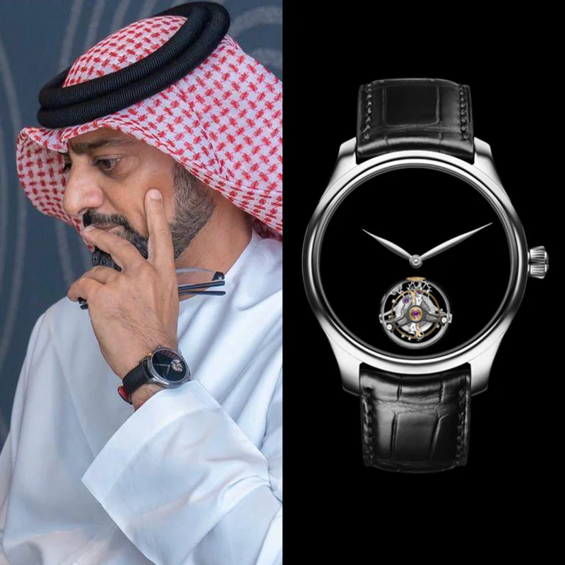

Home · The Collection · H. Moser & Cie

H. Moser & Cie · 6200-0408
H. Moser & Cie Perpetual Calendar Funky Blue
R · Rare
| Movement | Manual-winding, HMC 341 |
| Case | 18K Rose Gold |
| Dial | Funky Blue Fumé Enamel |
| Case size | 40.8mm |
| Power reserve | 7 days |
| Complications | Perpetual calendar, Leap year indicator |
| Year | 2016 |
| Valuation | US$ 75,000 |
H. Moser & Cie strips back the perpetual calendar to its essential elements, displaying the complication through a clean, minimalist fumé dial. The 'Funky Blue' enamel dial gradients from deep navy to lighter sky blue, creating a mesmerizing visual effect that is entirely unique to Moser.